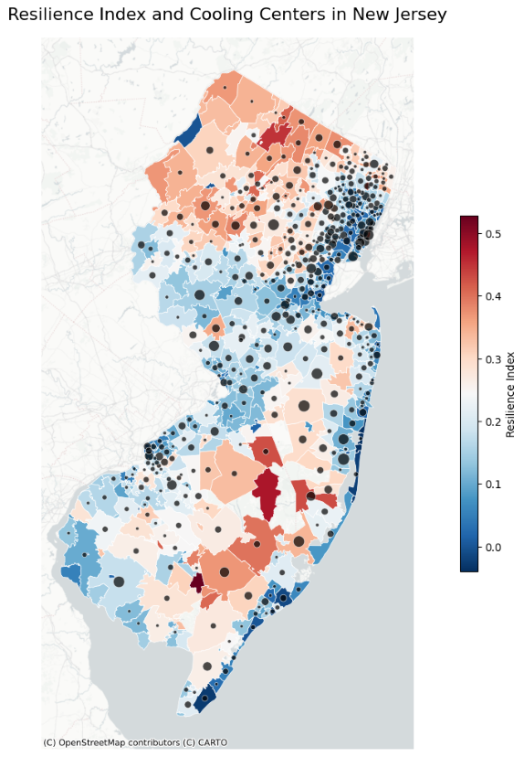
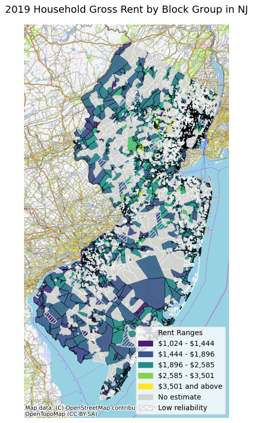

Safiyeh Tayebi | safiyeh.tayebi@rutgers.edu
Course: Command Line GIS
The vulnerability score highlights areas with higher susceptibility to heat stresses, often influenced by socio-economic and demographic factors. Higher scores (darker shades) indicate populations that are more at risk, suggesting limited access to resources like healthcare, cooling centers, and adaptive infrastructure. These areas require targeted interventions to reduce vulnerabilities and improve resilience.
The resilience score measures the capacity of populations to adapt to and recover from heat stresses. Higher scores (yellow areas) reflect stronger resilience, often associated with better infrastructure, social capital, and economic stability. In contrast, lower scores (blue areas) indicate communities that may struggle to cope with extreme heat.
This composite index integrates various dimensions of vulnerability and adaptive capacity to provide a holistic measure of resilience. Higher values (yellow areas) indicate more resilient regions, while lower values (purple and green) identify zones with limited resources and greater exposure to heat-related risks.
Population density illustrates the distribution of residents, with darker areas representing higher densities. High-density areas are often more vulnerable to heat stresses due to urban heat islands and overcrowding, potentially exacerbating health risks, especially where resilience resources are lacking.
This variable likely represents households with no vehicle access, a proxy for socio-economic disadvantage and limited mobility. Areas with higher percentages of households without vehicles (darker shades) may face greater challenges accessing cooling centers or evacuating during extreme heat events.
This variable quantifies the ease of access to cooling centers, with higher values (yellow areas) indicating better accessibility. Regions with lower accessibility (darker shades) face significant resilience gaps, particularly during heatwaves, highlighting the need for improved infrastructure and equitable cooling center placement.
|  |  |